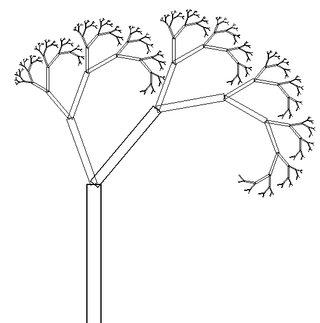

Manipulations du repère courant
Le squelette de ce TP est dans
o_ex_arbre.c.
Il contient une fonction récursive d'affichage que vous devez terminer.
Remarques :
-
Vous n'utiliserez pas de fonctions trigonométriques
-
Le sol est le plan XY et l'arbre pousse vers le haut.
-
L'objet arbre peut être paramétré
par trois objets :
- Le premier est une table de points (Racourci clavier : TNCP3)
- le deuxième défini le graphisme du tronc.
On suppose que le tronc à une hauteur de 1.
- le troisième défini le graphisme de la feuille.
En chargeant le modèle «TP/test_arbre» vous avez une
``jolie'' scène toute faite.
Qui s'affichera correctement quand le TP sera terminé.
-
À tous les embranchements de l'arbre,
il y a le même nombre de branches.
-
À chaque embranchement de l'arbre les paramètres permettant
de dessiner les branches sont les même.
Une branche est paramétrée par un triplet de valeurs :
- Angle de rotation (faire pencher la branche à gauche ou à droite suivant l'axe X).
- Facteur de rapetissement (de la branche)
- Un angle de rotation de la branche autour de son axe (axe Z). Cet
angle sera appelé angle de ``torsion''.
Le nombre de triplets indique le nombre de branches
(de sous-arbre) par embranchement.
L'arbre sera paramétré par sa profondeur de récursion :
- 0 : Une feuille
- 1 : Le tronc avec X arbres de profondeur 0 (X feuilles)
- 2 : Le tronc avec X arbres de profondeur 1 (X branches feuillus)
- ...
Si vous trouver ceci trop simple :
ajouter des paramètres supplémentaires
afin de choisir les différentes valeurs aléatoirement.
(Voir les fonctions C rand et srand)
Dans la figure suivante (2D) l'angle ``torsion'' est nul,
s'il n'est pas nul, alors la figure devient une figure 3D.
De plus, il y a deux branches (X=2) au bout de chaque tronc.
Et la profondeur de récursion est de neuf (N=9).
Il n'y a pas de feuille.

L'image précédente à été faite
par le programme PostScript suivant :
/tronc {
newpath
-5 0 moveto
-5 100 lineto
5 100 lineto
5 0 lineto
0 0 lineto
closepath
stroke
} def % Définition de la fonction affichant le tronc
/arbre
{
dup % Sauvegarde la profondeur
0 ne % Test si fin de récursion
{
1 sub % Calcule la nouvelle profondeur
dup % Duplique, car 2 appels récursif
tronc % Affiche le tronc
gsave 0 100 translate 20 rotate .5 .5 scale arbre grestore
gsave 0 100 translate -40 rotate .7 .7 scale arbre grestore
}
{
pop % Enlève le haut de pile
}
ifelse
} def % La fonction récursive prend un argument dans la pile (profondeur)
200 0 translate
2 2 scale
11 arbre
Thierry EXCOFFIER
Last modified: Wed Aug 30 14:14:43 CEST 2000
{kind=link}